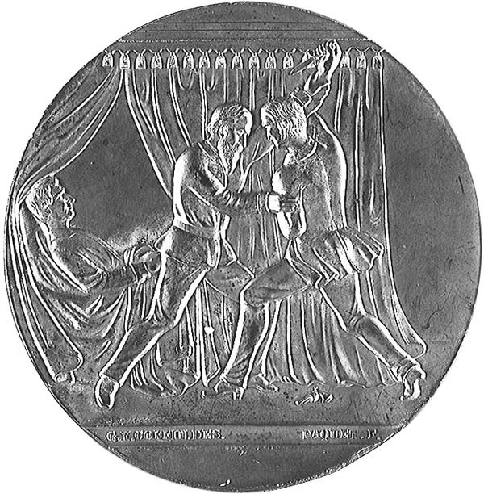

George Foster Robinson Major, United States Army |
|
| The
man who history forgot
By JOE BLACKSTOCK COLUMNIST There aren't any monuments or statues honoring George Foster Robinson, and you'll rarely find him in even the most detailed history book. But on one dark day in the nation's history, he became an American hero. Robinson, who spent the last years of his life in Pomona, was thrust into the limelight on the night of the assassination of Abraham Lincoln, 139 years ago tonight. Robinson wasn't at Ford's Theater on the night of April 14, 1865, when John Wilkes Booth shot Lincoln. Only a few blocks away, he fought off another assassin trying to kill Secretary of State William H. Seward as part of a conspiracy to bring the government to its knees. A 32-year-old Union sergeant, Robinson was
recovering from battlefield wounds when he was temporarily assigned as
an attendant to Seward. The secretary was bedridden because of injuries
received when a carriage overturned 10 days before.
Payne, who was captured shortly after the attack, was part of a conspiracy in the days after the end of the Civil War to kill not only Lincoln and Seward but also Vice President Andrew Johnson and General Ulysses S. Grant. Attacks on the latter two did not go forward. Payne -- who was also known as Lewis Powell -- was a native Alabaman who fought for the Confederacy. He was captured at Gettysburg, later escaped and was recruited into the circle of Southerners planning the assault on Washington leaders. Payne and other accused conspirators were tried
- Robinson testified at the trial - and on July 7 were hanged. Both Seward
and Robinson recovered from the wounds inflicted in the attack.
His heroics did not go unrewarded. He became a clerk in the War Department, until the Maine Legislature petitioned Congress asking that their favorite son be honored in a more appropriate way. In 1871, Robinson was awarded the Congressional Gold Medal, the same national award given notables from Thomas Edison to Rosa Parks to Tony Blair. In addition to awarding him the specially crafted $2,000 gold medal, the House of Representatives voted Robinson $5,000 in cash, "commemorative of (his) heroic conduct" As a bonus, he was promoted to Major and given a position as Paymaster of the Army. It was while serving in that capacity that Robinson first visited Southern California. In 1892, he bought 20 acres of orange trees on the east side of today's Towne Avenue in Pomona, a ranch his son Edmund operated. In 1896, Robinson retired from the military and moved with his wife Aurora to a Pomona house at 245 East Pasadena Street. The old soldier died at home of pneumonia at age 75 on August 16, 1907. He is buried at Arlington National Cemetery near Washington, D.C., next to Aurora, who died in January 1922. In 1965, on the centennial of the attacks on
Lincoln and Seward, Congress named Mount Sergeant Robinson, a 10,415-foot
peak about 90 miles northeast of Anchorage, Alaska. The selection of a
mountain in that state was in part because Seward, two years after Robinson
saved his life, brokered the purchase of Alaska from Russia.
But despite these honors long ago, Robinson remains almost anonymous as neither his birthplace in Maine nor his last hometown of Pomona having any marker or remembrance of his heroic actions. Even the Internet has contributed toward obscuring his memory. The clerk of the House of Representatives lists on a Web site a short biography of those who have received the Congressional Gold Medal. In this Web site, Robinson is listed as having been born in Ohio in 1844 and dying there in 1917. The Web site has somehow mixed him up with a George Foreman Robinson, a distinguished lawyer, Union soldier and mayor of Ravenna, Ohio, according to the Ravenna Library. That Robinson, though twice a Civil War prisoner of war himself, never received the prestigious gold medal. For George Foster Robinson -- a national hero with a gold medal and his name on two mountains -- fame has been very much fleeting. Note: Great assistance in the research of this column came from the tireless efforts of Tim Cooper of the Buckfield Historical Society in Maine. Historian Lorraine Parsons of Canton, Maine; Lisa Friedman of the Daily Bulletin's Washington bureau, Bruce Guter of the Pomona Public Library, and the reference desks of the Upland and San Francisco public libraries were also invaluable in this work. Joe Blackstock writes on Inland Valley history.
He can be reached by e-mail at j_blackstock@dailybulletin.com or by calling
(909) 483-9382.
Joint Resolution for the Relief of George F.
Robinson, Eighth Regiment Maine
Be it resolved by the Senate and House of Representatives of the United States of America in Congress assembled, That the Secretary of the Treasury be, and he is hereby, directed to pay to George F. Robinson, late a Private in the Eighth Regiment of Maine Volunteers, the sum of five thousand dollars, out of any money in the treasury of the United States not otherwise appropriated. SEC. 2. And be it further resolved, That the
Secretary of the Treasury be, and he is hereby, directed to cause
to be prepared and presented to the said George F. Robinson a gold
medal, with appropriate devices and inscriptions, commemorative of
the heroic conduct of the said Robinson, on the fourteenth day of April,
eighteen hundred and sixty-five, in saving the life of the honorable
William H. Seward, then Secretary of State of the United States;
the expense of said medal to be paid out of any money in the treasury not
otherwise appropriated.

Posted: 17 April 2004 |
|